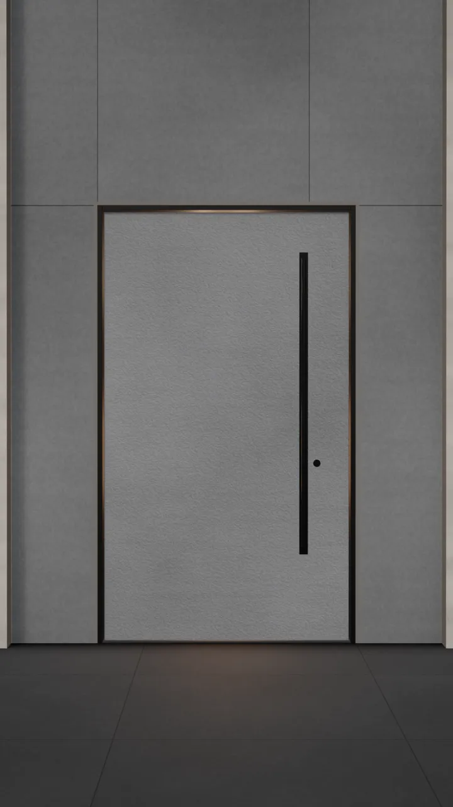

BEAUTY. BUILT IN.
מערכת שנבנתה
כדי להחזיק לאורך שנים
גללו כדי לפתוח
MORE THAN A DOOR
יותר מדלת כניסה.
מערכת מתקדמת, חומרים ללא גבולות ועיצוב אחד מושלם.
הסרט הוא המחשה תלת־ממדית. מבנה הדלת והגמרים בהתאם למפרט שנבחר.